C# 快速操作与重构
Visual Studio Code 为你提供了多种重构源代码的方式，以及在使用代码时生成代码和修复问题的快速修复。要访问它们，请点击出现的"灯泡"图标，或使用快速修复命令 kb(editor.action.quickFix) 来显示快速修复和重构选项列表。你也可以右键单击编辑器并选择重构 kb(editor.action.refactor) 来仅显示重构选项。
支持的重构和快速修复
- 添加
await - 从成员添加构造函数参数
- 添加
DebuggerDisplay特性 - 添加显式类型转换
- 添加文件头
- 添加缺失的
usings/ 导入 - 添加命名参数
- 将匿名类型转换为类
- 在自动属性和完整属性之间转换
- 在直接类型转换和
as表达式之间转换 - 在
for循环和foreach语句之间转换 - 在 Get 方法和属性之间转换
- 在
if和switch语句之间转换 - 在常规字符串和逐字字符串之间转换
- 将类转换为记录
- 将局部函数转换为方法
- 将数字文本转换为十六进制、十进制或二进制数
- 将占位符转换为内插字符串
- 将常规字符串转换为内插字符串
- 将元组转换为结构体
- 封装字段
- 生成比较运算符
- 生成默认构造函数
- 生成参数
- 显式实现所有成员
- 隐式实现所有成员
- 内联方法
- 内联临时变量
- 为表达式引入局部变量
- 引入参数
- 引入
using语句 - 反转条件表达式和逻辑运算
- 反转
if - 将成员设为静态
- 将声明移动到引用附近
- 将类型移动到匹配文件
- 反转
for语句 - 拆分或合并
if语句 - 使用显式类型
- 使用隐式类型
- 使用 Lambda 表达式或块体
- 使用递归模式
- 换行、缩进和对齐重构
- 换行并对齐调用链
- 换行、缩进并对齐参数或实参
- 换行二元表达式
添加 await
功能： 向函数调用添加 await 关键字。
何时使用： 当你在异步方法中调用函数时。
使用方法：
- 将光标放在函数调用旁（通常会用红色下划线标出）。
- 按
kb(editor.action.quickFix)触发快速操作和重构菜单。 - 选择添加
await。
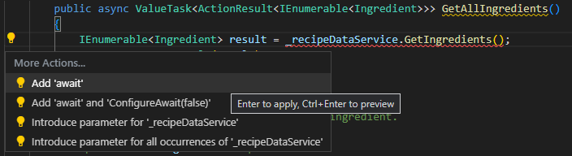
从成员添加构造函数参数
功能： 根据选定的类成员生成带有参数的新构造函数。
何时使用： 当你引入一个新构造函数并希望自动正确声明所有参数时。
为什么： 你可以在使用构造函数之前手动声明它，但此功能可以自动生成它。
使用方法：
- 高亮选中你想要作为构造函数参数添加的类成员。
- 按
kb(editor.action.quickFix)触发快速操作和重构菜单。 - 选择生成构造函数 <classname>(<membertype>, <membertype>, <etc.>)。
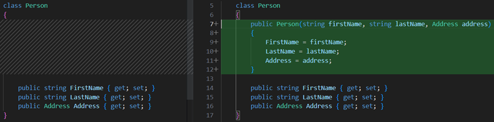
添加 DebuggerDisplay 特性
功能： DebuggerDisplay 特性 控制对象、属性或字段在调试器变量窗口中的显示方式。
何时使用： 当你希望以编程方式在代码中固定属性以便在调试器中使用时。
为什么： 固定属性允许你通过将属性提升到调试器内对象属性列表的顶部来快速检查对象的属性。
使用方法：
- 将光标放置在类型、委托、属性或字段上。
- 按
kb(editor.action.quickFix)触发快速操作和重构菜单并选择添加DebuggerDisplay特性。 DebuggerDisplay特性将被添加，同时带有一个返回默认ToString()的自动方法。
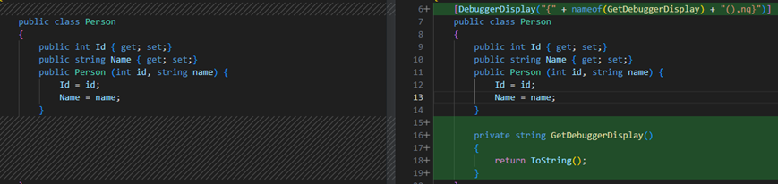
添加显式类型转换
功能： 允许你根据使用情况自动向表达式添加显式类型转换。
何时使用： 当你需要向表达式添加显式类型转换并希望自动正确分配时。
为什么： 你可以手动向表达式添加显式类型转换，但此功能会根据代码上下文自动添加。
使用方法：
- 将光标放在错误处。
- 按
kb(editor.action.quickFix)触发快速操作和重构菜单。 - 选择添加显式类型转换。
添加文件头
功能： 使用 EditorConfig 向现有文件、项目添加文件头。
何时使用： 当你希望轻松地向文件、项目和解决方案添加文件头时。
为什么： 你的团队要求你出于版权目的包含文件头。
使用方法：
- 如果你还没有 EditorConfig，请将其添加到项目或解决方案中。
- 将以下规则添加到你的 EditorConfig 文件：
file_header_template。 - 将规则的值设置为你希望应用的头文本。你可以使用
{fileName}作为文件名的占位符。 - 将光标放在任何 C# 文件的第一行。
- 按
kb(editor.action.quickFix)触发快速操作和重构菜单。 - 选择添加文件头。
添加缺失的 usings / 导入
功能： 允许你立即为复制粘贴的代码添加必要的导入或 using 指令。
何时使用： 从项目中的不同位置或其他来源复制代码并将其粘贴到新代码中是常见做法。此快速操作会查找复制粘贴代码的缺失导入指令，然后提示你添加它们。此代码修复还可以添加项目之间的引用。
为什么： 由于快速操作会自动添加必要的导入，你不需要手动复制代码所需的 using 指令。
使用方法：
- 从文件复制代码并将其粘贴到一个新文件中，而不包含必要的 using 指令。产生的错误会附带一个用于添加缺失 using 指令的代码修复。
- 选择
kb(editor.action.quickFix)打开快速操作和重构菜单。 - 选择使用 <your reference> 来添加缺失的引用。
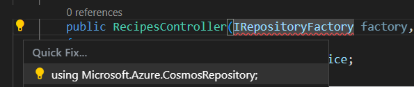
usings / 导入示例">添加命名参数
功能： 在函数调用中为指定的参数值追加命名参数。
何时使用： 如果你有一个包含大量参数的方法，你可以添加命名参数以使代码更具可读性。
使用方法：
- 将光标放在函数调用中的参数内。
- 按
kb(editor.action.quickFix)触发快速操作和重构菜单。 - 选择添加参数名称 <parameter name>。
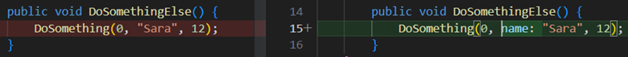
将匿名类型转换为类
功能： 将匿名类型转换为类。
何时使用： 你有一个匿名类型，希望继续在类中构建。
为什么： 如果你只在本地使用匿名类型，它们很有用。随着代码的增长，有一种简单的方法将它们提升为类是很方便的。
使用方法：
- 将光标放在匿名（
var）类型中。 - 按
kb(editor.action.quickFix)触发快速操作和重构菜单。 - 选择转换为类。
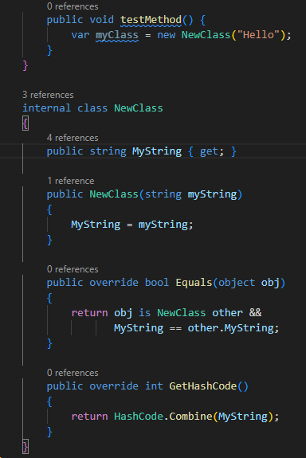
在自动属性和完整属性之间转换
功能： 在自动实现属性和完整属性之间进行转换。
何时使用： 属性的逻辑发生了改变。
为什么： 你可以手动在自动实现属性和完整属性之间转换，但此功能将自动为你完成这项工作。
使用方法：
- 将光标放在属性名称上。
- 按
kb(editor.action.quickFix)触发快速操作和重构菜单。 - 从以下两个选项中选择：
选择转换为完整属性。
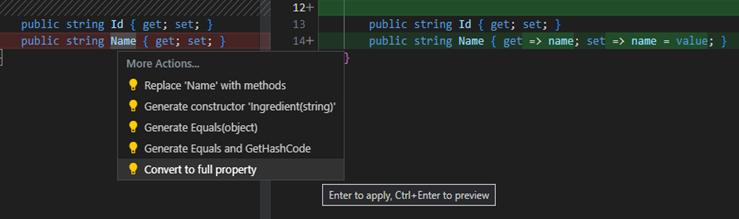
选择使用自动属性。
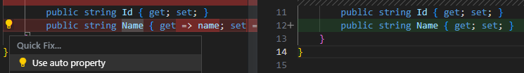
在直接类型转换和 'as' 表达式之间转换
功能： 在常规类型转换和使用 as 关键字的尝试转换之间转换变量。
何时使用： 当你预期类型转换在某些情况下会失败（as）或当你从不预期类型转换会失败（直接转换）时。
使用方法：
- 将光标放在变量上。
- 按
kb(editor.action.quickFix)触发快速操作和重构菜单。 - 从以下两个选项中选择：
选择更改为类型转换。
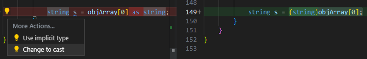
选择更改为 as 表达式。
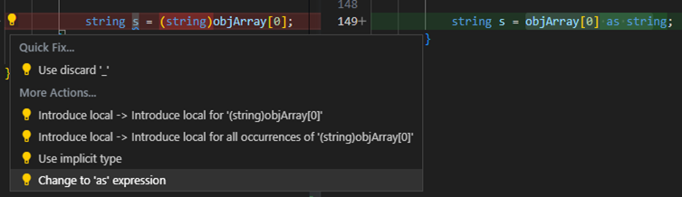
as 表达式示例">在 for 循环和 foreach 语句之间转换
功能： 如果你的代码中有 for 循环，你可以使用此重构将其转换为 foreach 语句。
为什么： 你可能希望将 for 循环转换为 foreach 语句的原因包括：
- 你在循环中除了将局部循环变量作为索引来访问项之外，没有使用它。
- 你希望简化代码并减少初始化器、条件和迭代器部分中逻辑错误的可能性。
你可能希望将 foreach 语句转换为 for 循环的原因包括：
- 你希望在循环中使用局部循环变量做更多的事情，而不仅仅是访问项。
- 你正在遍历多维数组，并且希望更多地控制数组元素。
使用方法：
- 将光标放在
foreach或for关键字中。 - 按
kb(editor.action.quickFix)触发快速操作和重构菜单。 - 从以下两个选项中选择：
选择转换为 for。
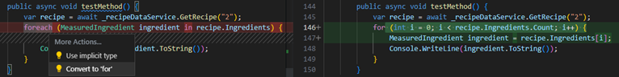
for 示例">选择转换为 foreach。
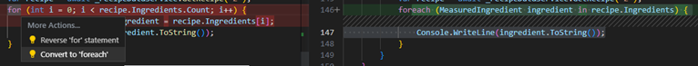
foreach">在 Get 方法和属性之间转换
将 Get 方法转换为属性
功能： 允许你将 Get 方法转换为属性（并可选择性地转换 Set 方法）。
何时使用： 当你有一个不包含任何逻辑的 Get 方法时。
使用方法：
- 将光标放在你的 Get 方法名称中。
- 按
kb(editor.action.quickFix)触发快速操作和重构菜单。 - （可选）如果你有 Set 方法，你也可以在此时转换你的 Set 方法。选择用属性替换 <Get 方法或 Set 方法名称>。
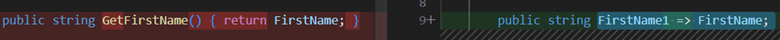
将属性转换为 Get 方法
功能： 允许你将属性转换为 Get 方法。
何时使用： 当你有一个涉及超出简单设置和获取值的属性时。
使用方法：
- 将光标放在你的 Get 方法名称中。
- 按
kb(editor.action.quickFix)触发快速操作和重构菜单。 - 选择用方法替换 <property name>。
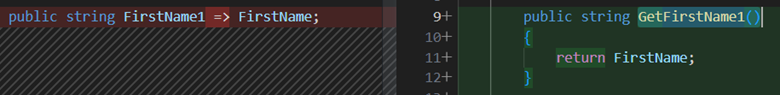
在 if 和 switch 语句之间转换
功能： 将 if 语句转换为 switch 语句 或 C# 8.0 的 switch 表达式。
何时使用： 当你希望将 if 语句转换为 switch 语句或 switch 表达式，反之亦然。
为什么： 如果你正在使用 if 语句，此重构可以让你轻松过渡到 switch 语句或 switch 表达式。
使用方法：
- 将光标放在
if关键字中。 - 按
kb(editor.action.quickFix)触发快速操作和重构菜单。 - 从以下选项中选择：
选择转换为 switch 语句。
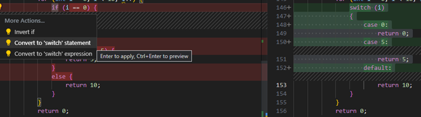
switch 语句示例">选择转换为 switch 表达式。
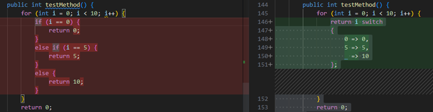
switch 表达式示例">选择转换为 if 语句。
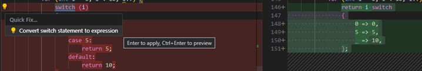
if 语句示例">在常规字符串和逐字字符串之间转换
功能： 允许你在常规字符串和逐字字符串文本之间进行转换。
何时使用： 当你希望节省空间或提高代码清晰度时。
为什么： 将逐字字符串文本转换为常规字符串文本可以帮助节省空间。将常规字符串文本转换为逐字字符串文本可以提高清晰度。
使用方法：
- 将光标放在常规字符串或逐字字符串文本上：
- 按
kb(editor.action.quickFix)触发快速操作和重构菜单。 - 从以下选项之一选择：
选择转换为常规字符串。
选择转换为逐字字符串。
将类转换为记录
功能： 将你的类转换为 C# 记录。
何时使用： 当你希望快速将类更改为记录时，记录专为存储数据和不可变性而设计。
使用方法：
- 将光标放在类名上。
- 按
kb(editor.action.quickFix)触发快速操作和重构菜单。 - 选择转换为位置记录。
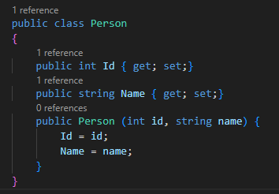
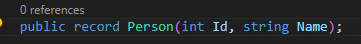
将局部函数转换为方法
功能： 将局部函数转换为方法。
何时使用： 你有一个想要在当前局部上下文之外定义的局部函数。
为什么： 你希望将局部函数转换为方法，以便可以在局部上下文之外调用它。当你的局部函数变得太长时，你可能希望将其转换为方法。当你将函数定义在单独的方法中时，你的代码更容易阅读。
使用方法：
- 将光标放在局部函数中。
- 按
kb(editor.action.quickFix)触发快速操作和重构菜单。 - 选择转换为方法。
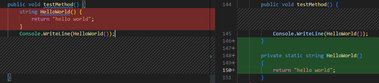
将数字文本转换为十六进制、十进制或二进制数
功能： 在十六进制、二进制或十进制数之间转换数字。
何时使用： 当你希望自动将数字转换为所需的进制，而不必手动计算转换时。
使用方法：
- 将光标放在数字文本上。
- 按
kb(editor.action.quickFix)触发快速操作和重构菜单。 - 选择以下选项之一：
选择转换为十进制。
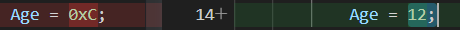
选择转换为十六进制。
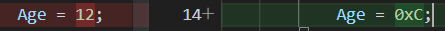
选择转换为二进制。
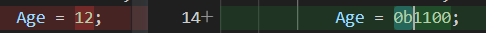
将占位符转换为内插字符串
功能： 将 String.Format 格式化的结果字符串（或占位符）转换为内插字符串。
何时使用： 当你希望快速获得内插字符串时。
为什么： 内插字符串可以为你提供比 String.Format 更易读的版本，并且可以让你直接访问你的变量名。
使用方法：
- 将光标放在
String.Format占位符上。 - 按
kb(editor.action.quickFix)触发快速操作和重构菜单。 - 选择转换为内插字符串。
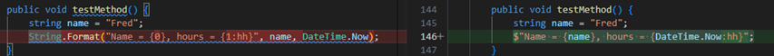
将常规字符串转换为内插字符串
功能： 将常规字符串更改为内插字符串。
何时使用： 当你希望清理代码并使其更具可读性时。
使用方法：
- 将光标放在你想要转换的字符串上。
- 按
kb(editor.action.quickFix)触发快速操作和重构菜单。 - 选择转换为内插字符串。
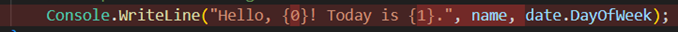
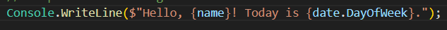
将元组转换为结构体
功能： 将你的元组转换为 struct。
何时使用： 当你希望快速将元组更改为 struct，并希望拥有可以多次访问的固定数据时。
使用方法：
- 将光标放在元组上。
- 按
kb(editor.action.quickFix)触发快速操作和重构菜单。 - 选择以下选项之一：
- 选择转换为
struct-> 更新包含成员中的用法- 选择转换为
struct-> 更新包含类型中的用法 - 选择转换为
struct-> 更新包含项目中的用法 - 选择转换为
struct-> 更新依赖项目中的用法
- 选择转换为
- 选择转换为
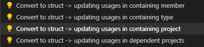
struct 选项">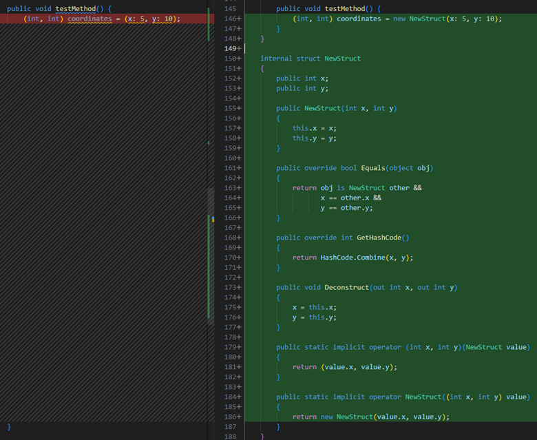
struct 示例">封装字段
功能： 允许你将字段转换为属性，并更新该字段的所有用法以使用新创建的属性。
何时使用： 当你希望将字段移到属性中，并更新对该字段的所有引用时。
为什么： 你希望让其他类访问一个字段，但不希望这些类直接访问。例如，通过将字段封装在属性中，你可以编写代码来验证正在赋值的值。
使用方法：
- 将光标放在要封装的字段名称内。
- 按
kb(editor.action.quickFix)触发快速操作和重构菜单。 - 选择以下之一：
选择封装字段：<fieldname>（并使用属性）。
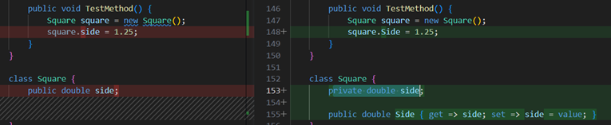
选择封装字段：<fieldname>（但仍使用字段）。
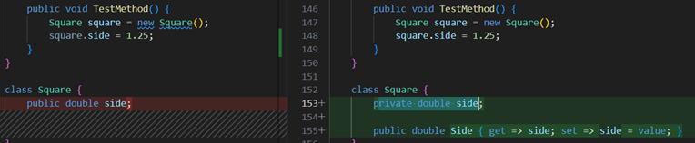
生成比较运算符
功能： 允许你为实现 IComparable 的类型生成比较运算符。
何时使用： 当你有一个实现 IComparable 的类型时，我们会自动添加比较运算符。
为什么： 如果你正在实现一个值类型，你应该考虑重写 Equals 方法，以获得比 ValueType 上 Equals 方法的默认实现更高的性能。
使用方法：
- 将光标放在类内部或 IComparable 关键字上。
- 按
kb(editor.action.quickFix)触发快速操作和重构菜单。 - 从下拉菜单中选择生成比较运算符。
生成默认构造函数
功能： 允许你立即为类生成新的默认构造函数的代码。
何时使用： 当你引入一个新的默认构造函数并希望自动正确声明它时。
为什么： 你可以在使用构造函数之前手动声明它，但此功能会自动生成它。
使用方法：
- 将光标放在类名上。
- 按
kb(editor.action.quickFix)触发快速操作和重构菜单。 - 选择生成构造函数 <classname>()。
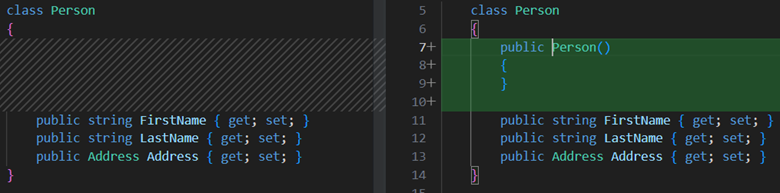
生成参数
功能： 自动生成一个方法参数。
何时使用： 当你在方法中引用当前上下文中不存在的变量并收到错误时；你可以生成一个参数作为代码修复。
为什么： 你可以快速修改方法签名而不会丢失上下文。
使用方法：
- 将光标放在变量名称中。
- 按
kb(editor.action.quickFix)触发快速操作和重构菜单。 - 选择生成参数。
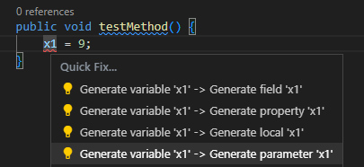
显式实现所有成员
功能： 在类中显式定义你的接口方法。显式接口实现是一个只能通过指定接口调用的类成员。
何时使用： 在以下情况下使用：
- 你不希望同一个实现被多个接口调用。
- 你想要解决两个接口各自声明了相同名称的不同成员（例如一个属性和一个方法）的情况。
使用方法：
- 将光标放在类中正在实现的接口上。
- 按
kb(editor.action.quickFix)触发快速操作和重构菜单。 - 选择显式实现所有成员：
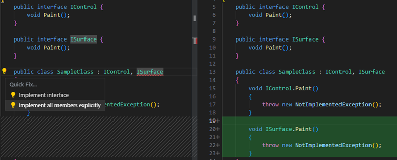
隐式实现所有成员
功能： 在类中隐式定义你的接口方法。隐式接口实现是指接口的方法和属性直接作为公共方法添加到类中。
使用方法：
- 将光标放在类中正在实现的接口上。
- 按
kb(editor.action.quickFix)触发快速操作和重构菜单。 - 选择实现接口：
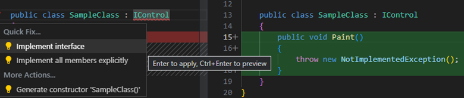
内联方法
功能： 内联方法重构。
何时使用： 当你希望替换单个语句体中的静态、实例和扩展方法的用法，并可以选择删除原始方法声明时。
为什么： 此重构提供了更清晰的语法。
使用方法：
- 将光标放在方法的使用处。
- 按
kb(editor.action.quickFix)触发快速操作和重构菜单。 - 从以下选项之一选择：
选择内联 <QualifiedMethodName> 以删除内联方法声明：
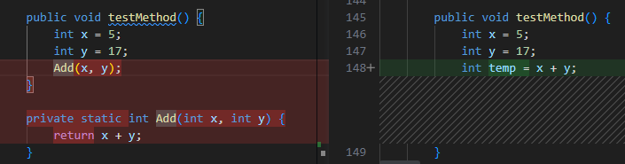
选择内联并保留 <QualifiedMethodName> 以保留原始方法声明：
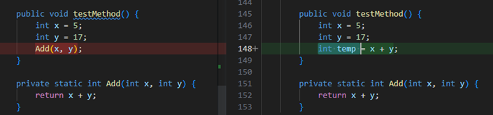
内联临时变量
功能： 允许你删除临时变量并用其值替换它。
何时使用： 临时变量的使用使代码更难理解时。
为什么： 删除临时变量可能使代码更容易阅读。
使用方法：
- 将光标放在要内联的临时变量内部。
- 按
kb(editor.action.quickFix)触发快速操作和重构菜单。 - 选择内联临时变量。
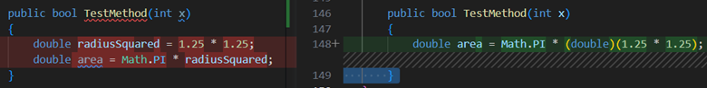
为表达式引入局部变量
功能： 允许你立即生成一个局部变量来替换现有的表达式。
何时使用： 当你有代码如果放在局部变量中，以后可以轻松重用时。
为什么： 你可以多次复制和粘贴代码以便在各种位置使用它，但更好的做法是执行一次操作，将结果存储在局部变量中，并在整个过程中使用该局部变量。
使用方法：
- 将光标放在你想要分配给新局部变量的表达式上。
- 按
kb(editor.action.quickFix)触发快速操作和重构菜单。 - 从以下选项中选择：
选择引入局部变量 -> 为 <expression> 引入局部变量
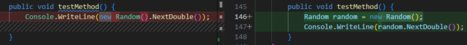
选择引入局部变量 -> 为 <expression> 的所有出现位置引入局部变量
引入参数
功能： 允许你立即生成一个新参数来替换现有的表达式。
何时使用： 当你有代码如果放在参数中，以后可以轻松重用时。
为什么： 你可以多次复制和粘贴代码以便在各种位置使用它，但更好的做法是执行一次操作，将结果存储在参数中，并在整个过程中使用该参数。
使用方法：
- 将光标放在你想要分配给新参数的表达式上。
- 按
kb(editor.action.quickFix)触发快速操作和重构菜单。 - 从以下选项中选择：
选择为 <expression> 引入参数 -> 并直接更新调用点
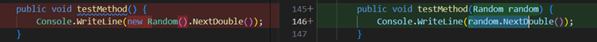
选择为 <expression> 引入参数 -> 引入到提取方法中
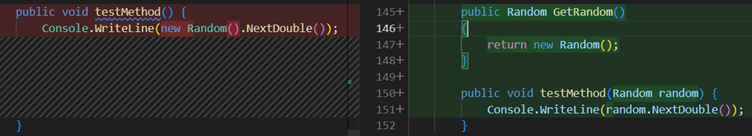
选择为 <expression> 引入参数 -> 引入到新重载中
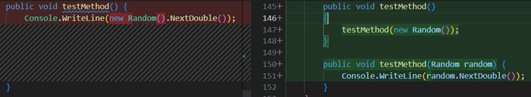
引入 using 语句
功能： 向你的 IDisposable 实例添加 using 语句 / 代码块。
何时使用： 当你有一个 IDisposable 实例，并希望确保它被正确地获取、使用和释放时。
使用方法：
- 将光标放在你想要分配给新参数的表达式上。
- 按
kb(editor.action.quickFix)触发快速操作和重构菜单。 - 选择引入
using语句。
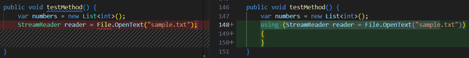
using 语句示例">反转条件表达式和逻辑运算
功能： 允许你反转条件表达式或条件 and \ or 运算符。
何时使用： 当你有一个条件表达式或条件 and \ or 运算符，如果反转会更易于理解时。
为什么： 手动反转表达式或条件 and \ or 运算符可能需要更长的时间并可能引入错误。此代码修复帮助你自动完成此重构。
使用方法：
- 将光标放在条件表达式或条件
and\or运算符中。 - 按
kb(editor.action.quickFix)触发快速操作和重构菜单。 - 选择反转条件或将
&&替换为||
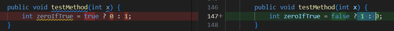
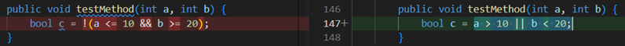
&& 替换为|| 示例">
反转 if
功能： 允许你反转 if 或 if else 语句而不改变代码的含义。
何时使用： 当你有一个 if 或 if else 语句，如果反转会更易于理解时。
为什么： 手动反转 if 或 if else 语句可能需要更长的时间并可能引入错误。此代码修复帮助你自动完成此重构。
使用方法：
- 将光标放在
if或if else语句中。 - 按
kb(editor.action.quickFix)触发快速操作和重构菜单。 - 选择反转
if。
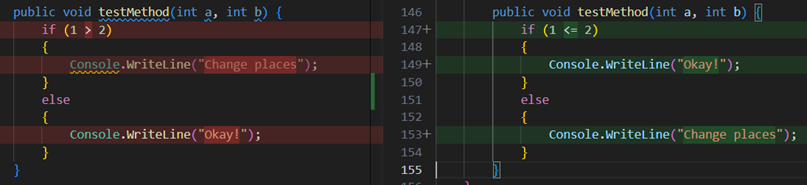
if 示例">将成员设为静态
功能： 将成员设为静态。
何时使用： 当你希望非静态成员变为静态时。
为什么： 静态成员提高了可读性：知道特定代码是隔离的，这使得它更容易理解、重读和重用。
使用方法：
- 将光标放在成员名称上。
- 按
kb(editor.action.quickFix)触发快速操作和重构菜单。 - 选择设为静态。
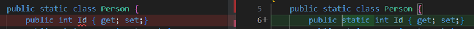
将声明移动到引用附近
功能： 允许你将变量声明移动到更靠近其使用位置的地方。
何时使用： 当你有一些可以在更窄范围内声明的变量声明时。
为什么： 你可以保持现状，但这可能会导致可读性问题或信息隐藏问题。这是一个重构以提高可读性的机会。
使用方法：
- 将光标放在变量声明中。
- 按
kb(editor.action.quickFix)触发快速操作和重构菜单。 - 选择将声明移动到引用附近。
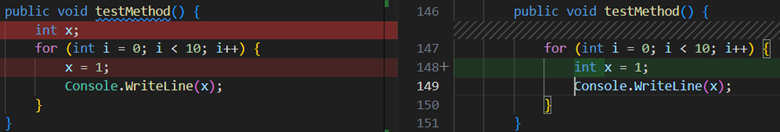
将类型移动到匹配文件
功能： 允许你将选定类型移动到一个具有相同名称的单独文件中。
何时使用： 当你想要分离同一个文件中的多个类、结构体、接口等时。
为什么： 将多个类型放在同一个文件中会使查找这些类型变得困难。通过将类型移动到具有相同名称的文件中，代码变得更加可读且更易于导航。
使用方法：
- 将光标放在定义类型的名称内部。
- 按
kb(editor.action.quickFix)触发快速操作和重构菜单。 - 选择将类型移动到 <typename>.cs。
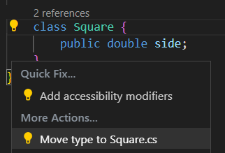
反转 for 语句
功能： 允许你反转 for 语句。
何时使用： 当你希望反转 for 语句的含义及其迭代方式时。
为什么： 手动反转 for 语句可能需要更长的时间并可能引入错误。此代码修复帮助你自动完成此重构。
使用方法：
- 将光标放在
for语句中。 - 按
kb(editor.action.quickFix)触发快速操作和重构菜单。 - 选择反转
for语句。
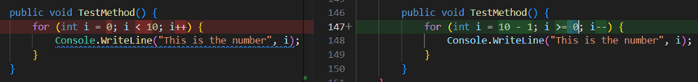
for 语句示例">拆分或合并 if 语句
功能： 拆分或合并 if 语句。
何时使用： 当你希望将使用 && 或 || 运算符的 if 语句拆分为嵌套的 if 语句，或将 if 语句与外部 if 语句合并时。
为什么： 这是一个风格偏好的问题。
使用方法：
如果你想要拆分 if 语句：
- 将光标放在
if语句中的&&或||运算符旁。 - 按
kb(editor.action.quickFix)触发快速操作和重构菜单。 - 选择拆分为嵌套的
if语句。
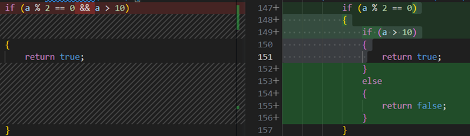
if 语句示例">如果你想要将内部 if 语句与外部 if 语句合并：
- 将光标放在内部
if关键字中。 - 按
kb(editor.action.quickFix)触发快速操作和重构菜单。 - 选择与嵌套的
if语句合并。
if 语句合并示例">
使用显式类型
功能： 使用此重构将局部变量声明中的 var 替换为显式类型。
为什么： 提高代码的可读性，或者当你不想在声明中初始化变量时。
但是，当变量使用匿名类型初始化以及稍后访问对象的属性时，必须使用 var。有关更多信息，请参阅隐式类型的局部变量 (C#)。
使用方法：
- 将光标放在
var关键字上。 - 按
kb(editor.action.quickFix)触发快速操作和重构菜单。 - 选择使用显式类型代替
var。
var 示例">
使用隐式类型
功能： 使用此重构将局部变量声明中的显式类型替换为 var。
为什么： 适应你的个人编码习惯并减少显示的代码量。当变量使用匿名类型初始化以及稍后访问对象的属性时，必须使用 Var。有关更多信息，请参阅隐式类型的局部变量 (C#)。
使用方法：
- 将光标放在显式类型关键字上。
- 按
kb(editor.action.quickFix)触发快速操作和重构菜单。 - 选择使用隐式类型。
使用 Lambda 表达式或块体
功能： 允许你将 Lambda 表达式重构为使用表达式体或块体。
何时使用： 当你偏好 Lambda 表达式使用表达式体或块体时。
为什么： 可以根据你的用户偏好重构 Lambda 表达式以提高可读性。
使用方法：
- 将光标放在 Lambda 运算符的右侧。
- 按
kb(editor.action.quickFix)触发快速操作和重构菜单。 - 选择以下之一：
选择对 Lambda 表达式使用块体。
选择对 Lambda 表达式使用表达式体。
使用递归模式
功能： 将代码块转换为使用递归模式。此重构适用于 switch 语句、属性模式匹配、元组模式匹配和位置模式匹配。
何时使用： 当使用递归模式可以使你的代码更具可读性 / 更简洁时。
使用方法：
- 将光标放在你想要转换为递归模式的表达式上。
- 按
kb(editor.action.quickFix)触发快速操作和重构菜单。 - 选择以下之一：
选择将 switch 语句转换为表达式。
switch 语句转换为表达式示例">
选择使用递归模式。
换行、缩进和对齐重构
换行并对齐调用链
功能： 允许你换行并对齐方法调用链。
何时使用： 当你有一个由一条语句中的多个方法调用组成的长链时。
为什么： 当根据用户偏好进行换行或缩进时，阅读长列表更容易。
使用方法：
- 将光标放在任何调用链中。
- 按
kb(editor.action.quickFix)触发快速操作和重构菜单。 - 选择换行调用链或换行并对齐调用链以接受重构。
换行、缩进并对齐参数或实参
功能： 允许你换行、缩进并对齐参数或实参。
何时使用： 当你有一个具有多个参数或实参的方法声明或调用时。
为什么： 当根据用户偏好进行换行或缩进时，阅读一长串参数或实参更容易。
使用方法：
- 将光标放在参数列表中。
- 按
kb(editor.action.quickFix)触发快速操作和重构菜单。 - 从以下选项中选择：
选择换行每个参数 -> 对齐换行的参数
选择换行每个参数 -> 缩进所有参数
选择换行每个参数 -> 缩进换行的参数
换行二元表达式
功能： 允许你换行二元表达式。
何时使用： 当你有一个二元表达式时。
为什么： 当根据用户偏好进行换行时，阅读二元表达式更容易。
使用方法：
- 将光标放在二元表达式中。
- 按
kb(editor.action.quickFix)触发快速操作和重构菜单。 - 选择换行表达式以接受重构。